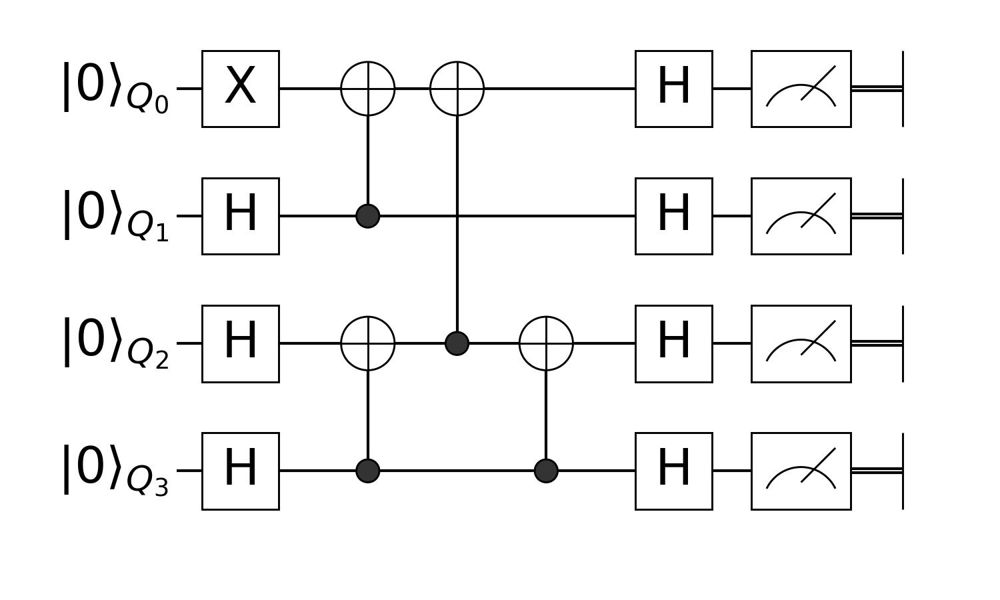

Prepare Greenberger–Horne–Zeilinger state with Quantum Circuit
First, you have to use this package in Julia.
using YaoNow, we just define the circuit according to the circuit image below:

circuit = chain(
4,
put(1=>X),
repeat(H, 2:4),
control(2, 1=>X),
control(4, 3=>X),
control(3, 1=>X),
control(4, 3=>X),
repeat(H, 1:4),
)nqubits: 4
chain
├─ put on (1)
│ └─ X
├─ repeat on (2, 3, 4)
│ └─ H
├─ control(2)
│ └─ (1,) X
├─ control(4)
│ └─ (3,) X
├─ control(3)
│ └─ (1,) X
├─ control(4)
│ └─ (3,) X
└─ repeat on (1, 2, 3, 4)
└─ H
Let me explain what happens here.
Put single qubit gate X to location 1
we have an X gate applied to the first qubit. We need to tell Yao to put this gate on the first qubit by
put(4, 1=>X)nqubits: 4
put on (1)
└─ XWe use Julia's Pair to denote the gate and its location in the circuit, for two-qubit gate, you could also use a tuple of locations:
put(4, (1, 2)=>swap(2, 1, 2))nqubits: 4
put on (1, 2)
└─ put on (1, 2)
└─ SWAP
But, wait, why there's no 4 in the definition above? This is because all the functions in Yao that requires to input the number of qubits as its first arguement could be lazy (curried), and let other constructors to infer the total number of qubits later, e.g
put(1=>X)(n -> put(n, 1 => X))which will return a lambda that ask for a single arguement n.
put(1=>X)(4)nqubits: 4
put on (1)
└─ XApply the same gate on different locations
next we should put Hadmard gates on all locations except the 1st qubits.
We provide repeat to apply the same block repeatly, repeat can take an iterator of desired locations, and like put, we can also leave the total number of qubits there.
repeat(H, 2:4)(n -> repeat(n, H, 2:4...))Define control gates
In Yao, we could define controlled gates by feeding a gate to control
control(4, 2, 1=>X)nqubits: 4
control(2)
└─ (1,) XLike many others, you could leave the number of total qubits there, and infer it later.
control(2, 1=>X)(n -> control(n, 2, 1 => X))Composite each part together
This will create a ControlBlock, the concept of block in Yao basically just means quantum operators, since the quantum circuit itself is a quantum operator, we could create a quantum circuit by composite each part of.
Here, we use chain to chain each part together, a chain of quantum operators means to apply each operators one by one in the chain. This will create a ChainBlock.
circuit = chain(
4,
put(1=>X),
repeat(H, 2:4),
control(2, 1=>X),
control(4, 3=>X),
control(3, 1=>X),
control(4, 3=>X),
repeat(H, 1:4),
)nqubits: 4
chain
├─ put on (1)
│ └─ X
├─ repeat on (2, 3, 4)
│ └─ H
├─ control(2)
│ └─ (1,) X
├─ control(4)
│ └─ (3,) X
├─ control(3)
│ └─ (1,) X
├─ control(4)
│ └─ (3,) X
└─ repeat on (1, 2, 3, 4)
└─ H
You can check the type of it with typeof
typeof(circuit)ChainBlock{2}Construct GHZ state from 00...00
For simulation, we provide a builtin register type called ArrayReg, we will use the simulated register in this example.
First, let's create $|00⋯00⟩$, you can create it with zero_state
zero_state(4)ArrayReg{2, ComplexF64, Array...}
active qubits: 4/4
nlevel: 2Or we also provide bit string literals to create arbitrary eigen state
ArrayReg(bit"0000")ArrayReg{2, ComplexF64, Array...}
active qubits: 4/4
nlevel: 2They will both create a register with Julia's builtin Array as storage.
Feed Registers to Circuits
Circuits can be applied to registers with apply!
apply!(zero_state(4), circuit)ArrayReg{2, ComplexF64, Array...}
active qubits: 4/4
nlevel: 2or you can use pipe operator |>, when you want to chain several operations together, here we measure the state right after the circuit for 1000 times
results = zero_state(4) |> circuit |> r->measure(r, nshots=1000)
using StatsBase, Plots
hist = fit(Histogram, Int.(results), 0:16)
bar(hist.edges[1] .- 0.5, hist.weights, legend=:none)![]()
GHZ state will collapse to $|0000⟩$ or $|1111⟩$.
This page was generated using Literate.jl.